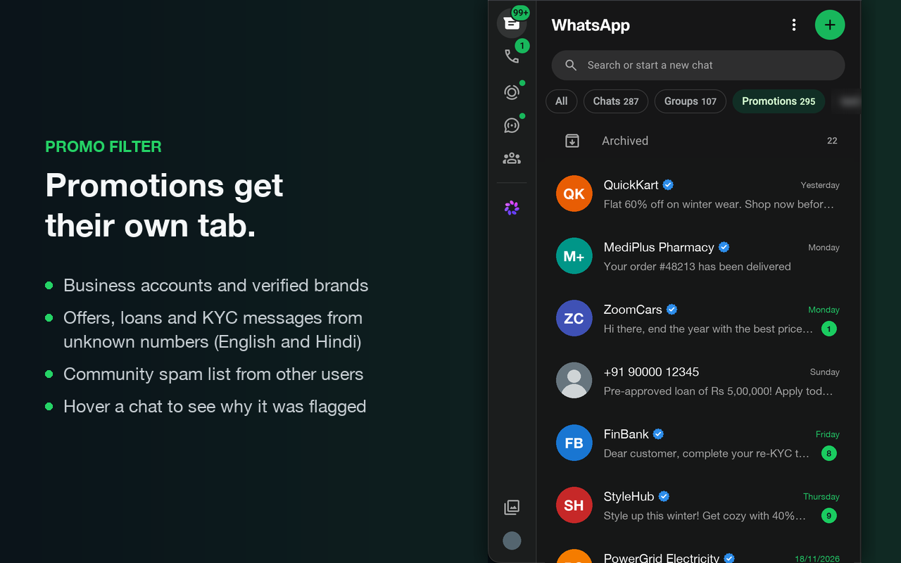
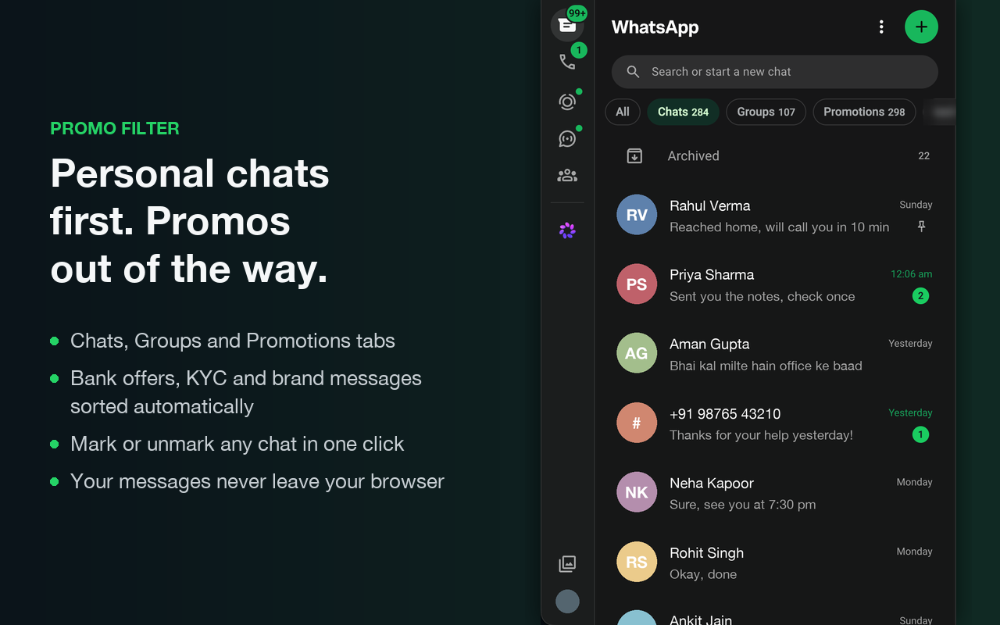
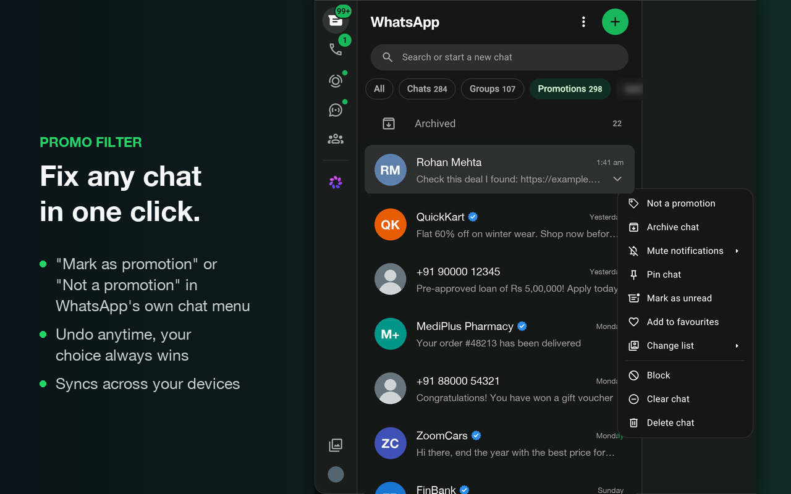

Personal chats first. Promotions out of the way.
Promo Filter sorts your WhatsApp Web chat list into Chats, Groups and Promotions tabs, so bank offers, KYC reminders and brand messages stop burying the people you talk to.
Free · Works on web.whatsapp.com in Chrome · Never sends messages for you

What it does
Automatic sorting that you can correct in one click.
Three clear tabs
Chats, Groups and Promotions, with counts, right where WhatsApp’s filter chips are.
Business chats, detected
Verified brands, business accounts and automated offers move to Promotions automatically.
Smart spam detection
Catches loan offers, discount codes and KYC blasts from unknown numbers, in English and Hindi.
Fix it in one click
“Mark as promotion” or “Not a promotion” from the chat’s own menu, with Undo. Your choice always wins.
Community spam list
Numbers several users marked as promotions are sorted for everyone, without revealing who marked them.
Private by design
Your messages are read on your computer only and never uploaded. No ads, no analytics, no tracking.
See it in action
It matches WhatsApp Web’s look, in light and dark mode.


How it works
Set up in under a minute.
- Add Promo Filter to Chrome and click its icon.
- Sign in with Google, so your choices follow you across devices.
- Open web.whatsapp.com: your chat list now has Chats, Groups and Promotions tabs.
- Use a chat’s menu to mark it as a promotion or not. The free version includes 5 marks.